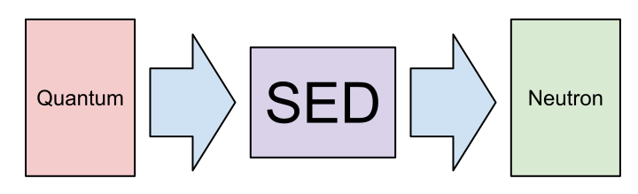

class: center, middle # OpenStack Upgrades --- ## Who is this Lars guy anyway? - Hi there. I'm new here. - Started in September 2013. - Somebody gave me this hat. - lars@redhat.com --- ## Overview Three upgrade scenarios: 1. Upgrade everything at once 2. Upgrade one service at a time 3. Upgrade one service at time with a parallel Havana Nova environment. --- ## Scenario 1: Everything at once - Simple because there's no orchestration involved - Good for development or POC environments - Not so good for real deployments because of extended downtime --- ## Scenario 1: Everything at once - Generally looks like: openstack-service stop yum upgrade upgrade-all-the-databases openstack-service start <img src="all-the-things.png" width="200" /> --- ## Scenario 2: Everything, one at a time - Instead of one major service interruption... - ...lots of smaller ones. Yay! - Schedule Nova upgrade separately from other services --- ## Scenario 2: Everything, one at a time - Generally looks like: openstack-service stop keystone yum upgrade *keystone* keystone-manage db_sync openstack-service start keystone --- ## Scenario 2: Everything, one at a time - This is a great way to spot package dependency problems. --- ## Scenario 3: Parallel Nova - Like scenario 2, except for Nova - Deploy Havana Nova environment on new hardware - Maximizes availability of compute service - Requires additional hardware --- ## Scenario 3: Parallel Nova - Migrate workloads through attrition, or - Migrate workloads via snapshot-delete-boot - Havana Nova can see snapshots created in Grizzly Nova (sharing Glance, Cinder, Neutron, Swift, etc) --- ## Scenario 3: Parallel Nova - New Nova environment is set up in Keystone as a new region. - New endpoint for compute - New endpoint for volume - CLI tools are happy (with --os-region-name or `OS_REGION_NAME`) - Horizon not so much --- ## Scenario 3: Parallel Nova Migrating an instance looks like: nova --os-region-name oldregion \ image-create <instance> <instance>_migrate nova --os-region-name oldregion \ delete <instance> nova --os-region-name newregion \ boot --image <instance>_migrate ... <instance> nova --os-region-name newregion \ add-floating-ip <instance> <ipaddr> --- ## Scenario 3: Parallel Nova - Reinstall Grizzly compute nodes as Havana compute nodes after all workloads are gone Not tested: - Volume service - Nova networking --- ## Upgrading Quantum to Neutron - **What were they thinking?** - Configuration files have all changed location - Python modules have all changed names - Configuration files *include* names of Python modules --- ## Upgrading Quantum to Neutron Neutron code doesn't know anything about old config files. So:  --- ## Upgrading Quantum to Neutron - **What were they thinking?** - Quantum database has no versioning information until you explicitly put it there - So nothing as simple as `neutron-manage db sync`. - Starting Neutron before database upgrade can break database --- ## Upgrading Quantum to Neutron Checking database version: neutron-db-manage --config-file /etc/neutron/neutron.conf \ --config-file /etc/neutron/plugin.ini current Setting database version: neutron-db-manage --config-file /etc/neutron/neutron.conf \ --config-file /etc/neutron/plugin.ini stamp grizzly --- ## Upgrading Quantum to Neutron Upgrading database: neutron-db-manage --config-file /etc/neutron/neutron.conf \ --config-file /etc/neutron/plugin.ini upgrade head --- ## Upgrading Quantum to Neutron - New `openstack-neutron` packages take much of the pain away - Quantum client seems happy talking to Neutron server --- ## Upgrading Horizon - `local_settings` substantially different between Grizzly and Havana packages - Requires manual inspection --- ## CI Testing - We have introduced one [Jenkins job][jenkins] running Dan's [test_rdo_upgrade][] script that validates all-in-one upgrades - We want to get some piecewise upgrade testing in place [test_rdo_upgrade]: https://github.com/kk7ds/test_rdo_upgrade [jenkins]: http://jenkins.rhev.lab.eng.brq.redhat.com:8080/job/packstack-rdo-grizzly-havana-upgrade/ --- ## CI Testing - Neutron has poor coverage in existing automated test tools (e.g., Tempest). - No gating tests in upstream CI. --- ## Documentation Extended documentation available [here][]. [here]: http://shell.bos.redhat.com/~lkellogg/rhos-upgrade-docs/ --- ## PS If you like [Markdown][], view the source of these slides, which were created using [remark][]. [markdown]: http://en.wikipedia.org/wiki/Markdown [remark]: https://github.com/gnab/remark